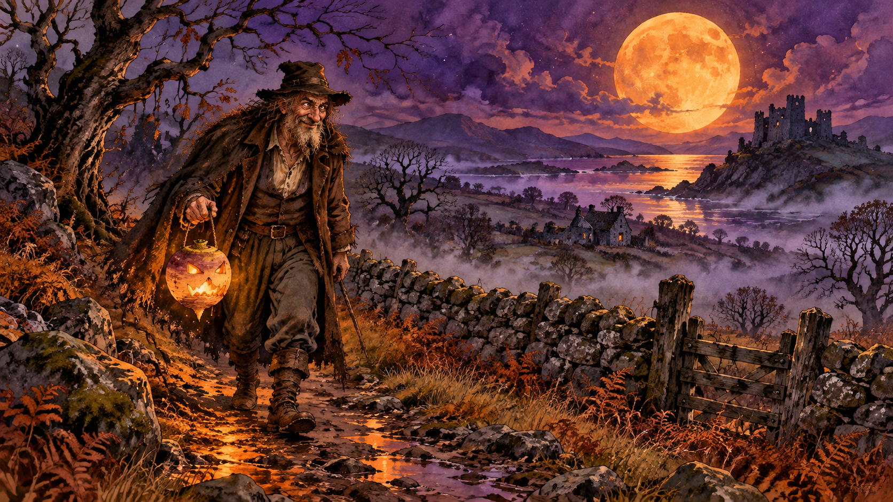
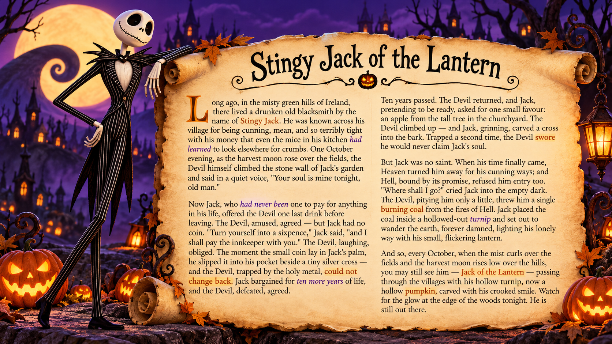
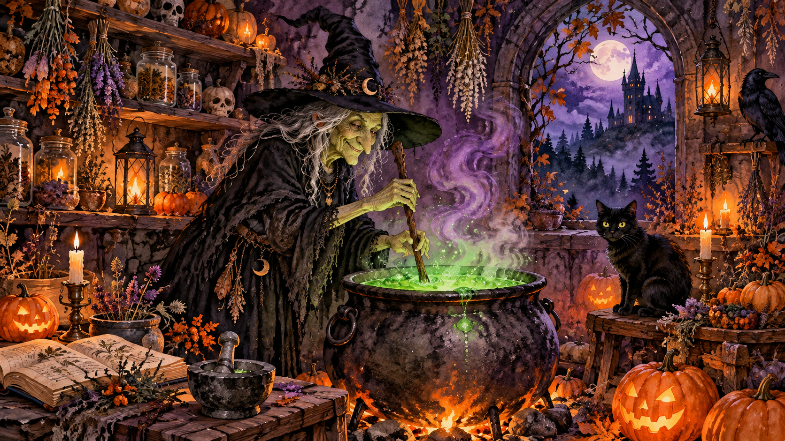
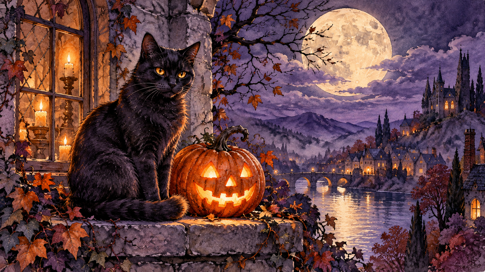
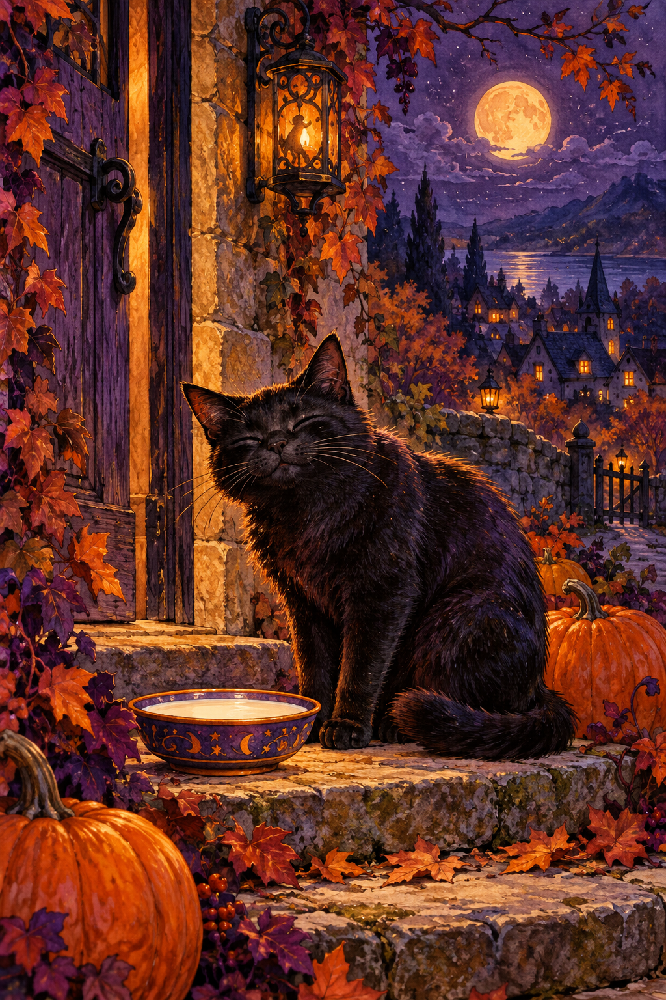
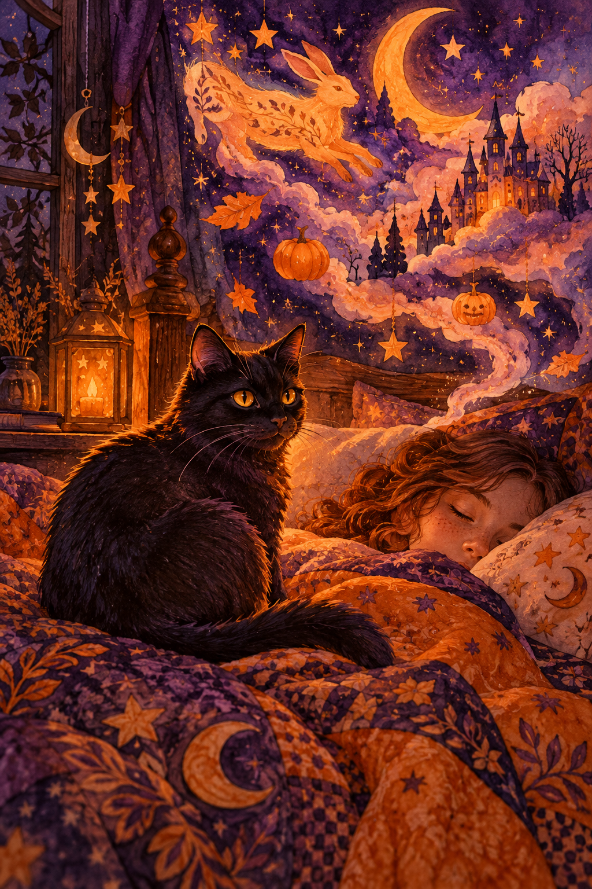
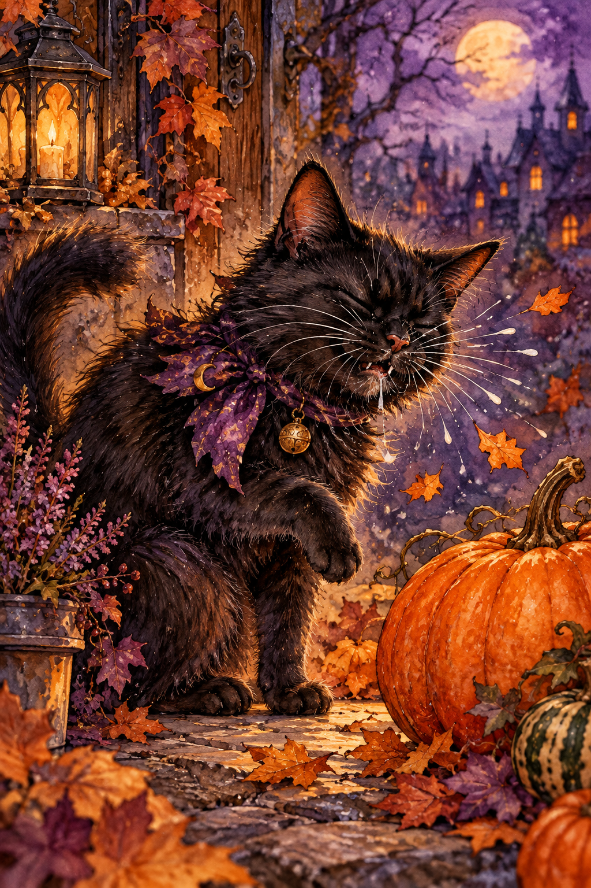

Hello, little ones! I'm Jack. 🎃
Hee-hee-hee… ha-ha-ha-ha-ha!
Today I will guide you through this lesson. Welcome to Hogsmeade!
Hello, little ones! I'm Jack. 🎃
Hee-hee-hee… ha-ha-ha-ha-ha!
Today I will guide you through this lesson. Welcome to Hogsmeade!
A whole wizarding village opens up for the first time, from the sweets at Honeydukes to a steaming mug of butterbeer at the Three Broomsticks — and the Shrieking Shack on the lonely hill above the lane. Articles with place names. As-as similes. Polite suggestions. Shopping. Ordering. Used to for things that have changed.
Keep it looping in the background while you move through the quest, or focus and answer the three listening questions below.
Listen again. Type the missing word (single word, lower case). Pressing Enter checks.
 Welcome to the Halloween quest · click to enlarge
Welcome to the Halloween quest · click to enlarge
 Quest · Stage 0
Quest · Stage 0
Tonight you walk a short road. At the end of it, a cauldron is boiling in a cottage window on the edge of the woods, and the Halloween Potion is waiting to be brewed. But the potion has rules. Three storytellers will meet you before you reach it, and each one carries one piece of what you need to know.
By the end you will write your own Halloween potion — in English, with your own ingredients, your own glowing colour, your own warning. One role-play at the cauldron closes the night.
💡 Grammar you will meet along the way: Past Perfect in Jack's tale · imperatives + sequencers in the Witch's recipe · First Conditional + modals of possibility in the Cat's superstitions · narrative tenses in your own writing.
An old Irish blacksmith who tricked the Devil twice and ended up walking the earth forever with a glowing turnip. His crooked smile is the one you carve into every pumpkin on October 31.

Stingy Jack · wandering the Irish fields with his flickering lantern · click to enlarge
Click the scroll to zoom. Read the full tale, then answer the questions below.
Click any word — Jack says it. Each is lifted straight from the text.
In narrative English, when something happened BEFORE another past event, we use had + V3 (Past Perfect). The main story runs in Past Simple; everything that is already true at that point steps back into Past Perfect.
| Sentence from the story | Why Past Perfect? |
|---|---|
| The mice had learned to look elsewhere. | They learned before the moment the Devil arrived. |
| Jack had never been one to pay for anything. | A life-long truth, true before this night. |
| Hell, bound by its promise, refused him — the Devil had sworn never to claim him. | The oath was made before Jack died. |
She has been brewing in this cottage for four hundred and twelve years. Her recipe never changes, her patience is thin, and her cat has stronger opinions than she does. Listen carefully — she only says each step once.

The witch's cottage · bubbling green potion, jars, pumpkins, a watchful black cat · click to enlargeThe old witch stirred the dark liquid in her black cauldron. "Come closer, dearie," she said, her voice like dry autumn leaves. "The potion needs seven ingredients, and if you forget even one, the night is spoiled. Listen carefully."
"First, pour three cups of moonlit water into the cauldron. Next, drop in five dried bat wings — carefully, dearie, they're brittle. Then, add one black feather from a crow that has flown over a graveyard. After that, sprinkle in a pinch of crushed spider's eggs. Now, stir anti-clockwise seven times — never the other way, or the potion will turn to vinegar. Finally, whisper the name of someone you miss, and seal the cauldron with a heavy iron lid. Boil for exactly thirteen minutes. The potion is ready when it glows green."
A recipe tells you what to do. In English, the "do this" form is the bare verb — no subject, no auxiliary. Negative is Don't / Never + V.
| Form | Example |
|---|---|
V | Pour three cups of water. Add one feather. |
Don't + V | Don't stir clockwise. |
Never + V | Never open the lid before thirteen minutes. |
Sequencers glue the steps together in order:
| Position | Sequencers (B1-B2) |
|---|---|
| Opening step | First · First of all · To begin with |
| Middle steps | Next · Then · After that · Now · Once … , … |
| Simultaneous | Meanwhile · At the same time · While …-ing |
| Final step | Finally · In the end · Last of all |
Click the steps in the correct order. Correct order wins the witch's silent nod.

She has heard every superstition about her kind and considers most of them utterly ridiculous. She is, however, willing to teach you the English for them — in exchange for one bowl of cream.

The black cat's watch · a jack-o-lantern burning beside her, the village sleeping below · click to enlargeEach card: an if-clause on the front. Click to flip — on the back you'll find the will / might / could half and the Russian meaning. Try to guess the ending before you flip.







💡 Flip them all → read the cat's monologue below → see how many of these she mentions.
A sleek black cat jumped onto the witch's shoulder, her eyes glowing like two small lanterns. "People say so many silly things about me," she purred.
"If a black cat crosses your path, they say, you will have bad luck — that's what English parents tell their children. But in Scotland, if a black cat appears on your doorstep, you'll become rich! If you hear a cat sneeze three times on Halloween night, you might catch a cold yourself. And if your cat refuses to look at the mirror on October 31st — well, it could mean she is seeing a ghost on the other side."
"Should you leave a saucer of cream on the step, she may bring you a quiet night. Unless you whistle indoors after midnight — then she will leave you to the ghosts."
"Me?" she yawned. "I just want cream. Humans. So dramatic."
The First Conditional talks about real, possible futures. The if-half uses Present Simple; the result-half uses a future form: will for certainty, might / may / could for possibility, should for prediction.
| Modal in the result | How certain? | Example from the cat |
|---|---|---|
will | 100% certain | If a black cat appears on your doorstep, you will become rich. |
might / may | maybe (50%) | She may bring you a quiet night. |
could | possible / theoretical | It could mean she is seeing a ghost. |
should | expected / likely | If you leave cream, she should stay the night. |
Unless = if not. Unless you whistle… = If you don't whistle…
 A ready potion · smoke curls up and smiles · click to enlarge
A ready potion · smoke curls up and smiles · click to enlarge
Invent your own Halloween potion. It can be for love, for luck, for revenge, for passing an exam, for turning your little brother invisible for one afternoon — anything you like. Write 150-180 words. Your recipe must contain:
💡 Need a start? "GHOSTLIGHT POTION — brewed to help you fall asleep after a scary film." / "MIDNIGHT COURAGE — one sip and you can walk past the graveyard alone."
Teacher plays the Witch and the Cat (switching voice). Student is You, the apprentice. Six turns total. Each ▶ reads a sample line.
Scroll-back cards. Keep this tab open while you write your potion in J4 and run J5 — Jack / Witch / Cat may ask for any of them.